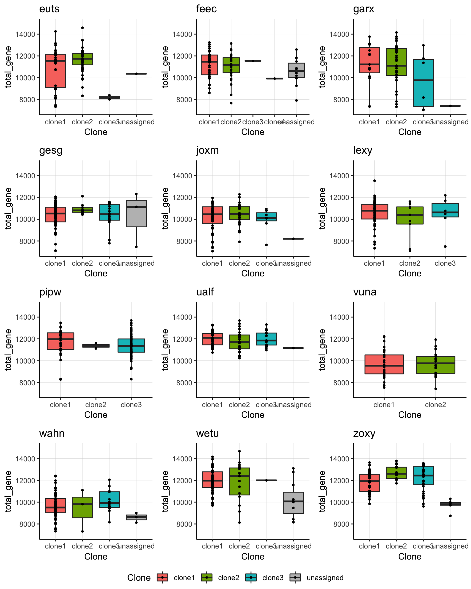
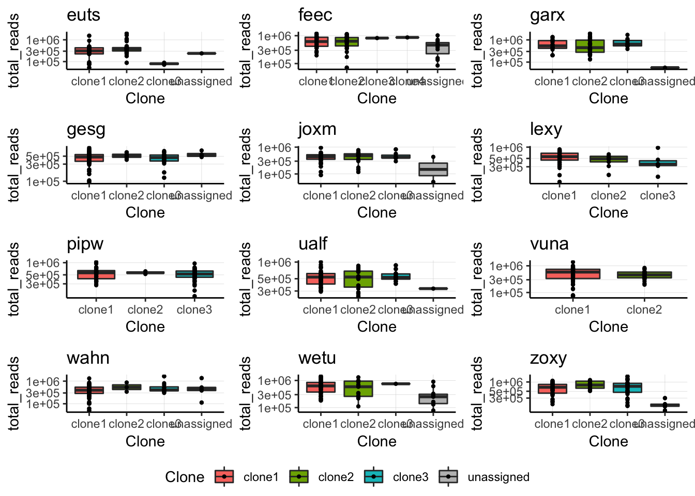
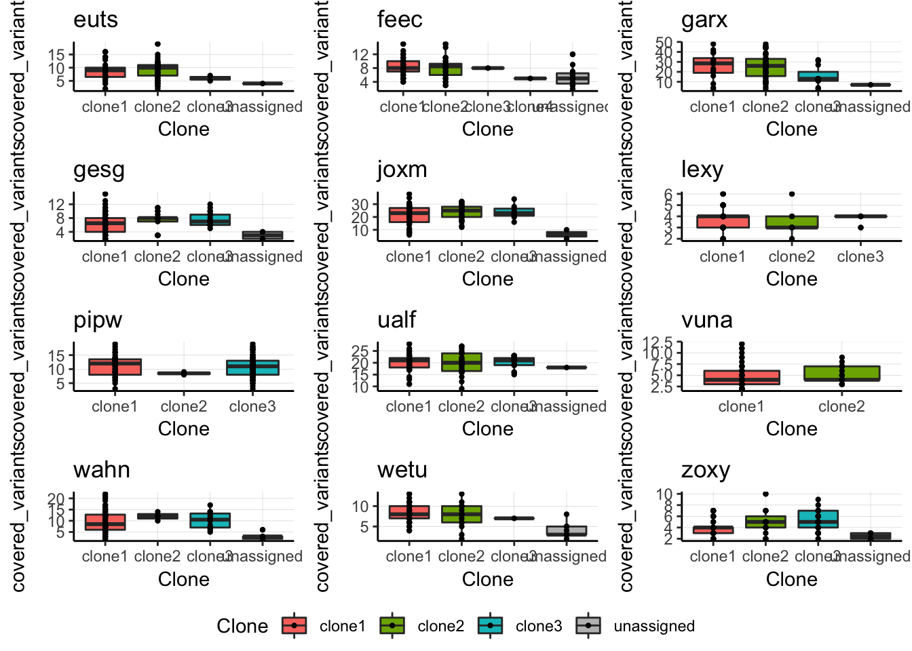
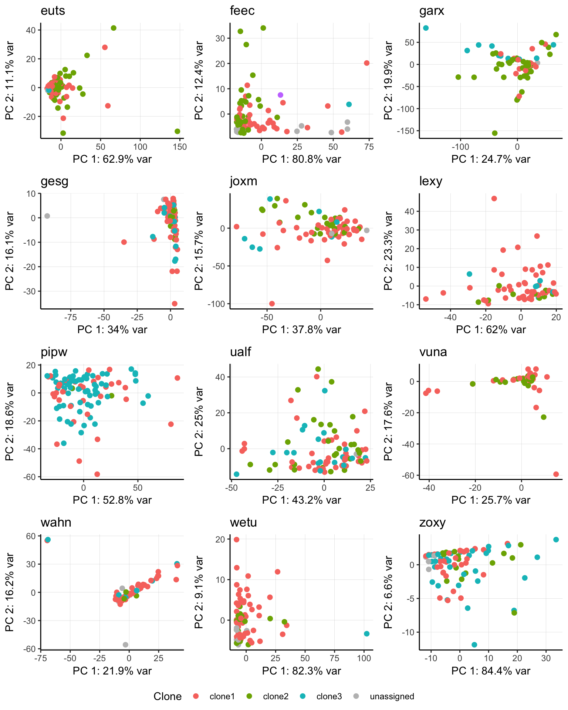
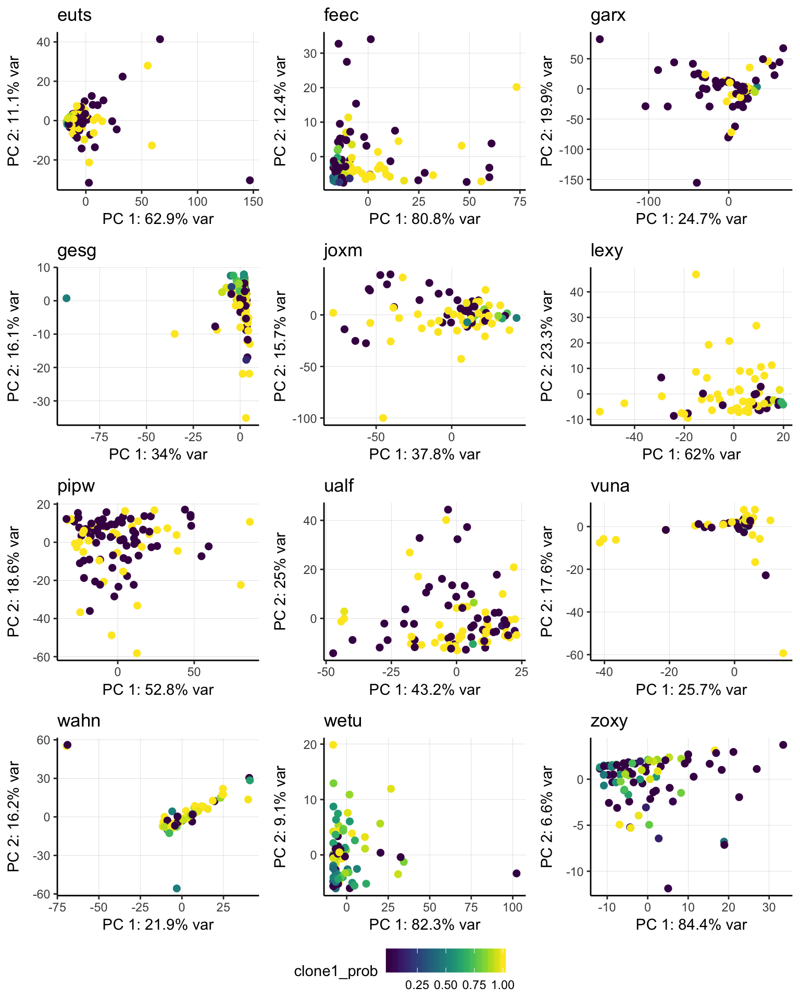
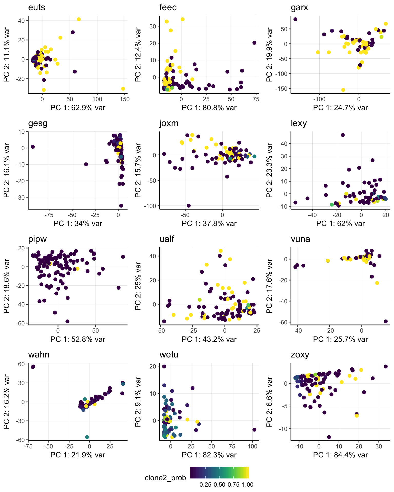

Last updated: 2018-11-09
workflowr checks: (Click a bullet for more information) ✔ R Markdown file: up-to-date
Great! Since the R Markdown file has been committed to the Git repository, you know the exact version of the code that produced these results.
✔ Environment: empty
Great job! The global environment was empty. Objects defined in the global environment can affect the analysis in your R Markdown file in unknown ways. For reproduciblity it’s best to always run the code in an empty environment.
✔ Seed:
set.seed(20180807)
The command set.seed(20180807) was run prior to running the code in the R Markdown file. Setting a seed ensures that any results that rely on randomness, e.g. subsampling or permutations, are reproducible.
✔ Session information: recorded
Great job! Recording the operating system, R version, and package versions is critical for reproducibility.
✔ Repository version: f98a31e
wflow_publish or wflow_git_commit). workflowr only checks the R Markdown file, but you know if there are other scripts or data files that it depends on. Below is the status of the Git repository when the results were generated:
Ignored files:
Ignored: .DS_Store
Ignored: .Rhistory
Ignored: .Rproj.user/
Ignored: .vscode/
Ignored: code/.DS_Store
Ignored: data/raw/
Ignored: src/.DS_Store
Ignored: src/Rmd/.Rhistory
Untracked files:
Untracked: Snakefile_clonality
Untracked: Snakefile_somatic_calling
Untracked: code/analysis_for_garx.Rmd
Untracked: code/selection/
Untracked: code/yuanhua/
Untracked: data/canopy/
Untracked: data/cell_assignment/
Untracked: data/de_analysis_FTv62/
Untracked: data/donor_info_070818.txt
Untracked: data/donor_info_core.csv
Untracked: data/donor_neutrality.tsv
Untracked: data/exome-point-mutations/
Untracked: data/fdr10.annot.txt.gz
Untracked: data/human_H_v5p2.rdata
Untracked: data/human_c2_v5p2.rdata
Untracked: data/human_c6_v5p2.rdata
Untracked: data/neg-bin-rsquared-petr.csv
Untracked: data/neutralitytestr-petr.tsv
Untracked: data/sce_merged_donors_cardelino_donorid_all_qc_filt.rds
Untracked: data/sce_merged_donors_cardelino_donorid_all_with_qc_labels.rds
Untracked: data/sce_merged_donors_cardelino_donorid_unstim_qc_filt.rds
Untracked: data/sces/
Untracked: data/selection/
Untracked: data/simulations/
Untracked: data/variance_components/
Untracked: figures/
Untracked: output/differential_expression/
Untracked: output/donor_specific/
Untracked: output/line_info.tsv
Untracked: output/nvars_by_category_by_donor.tsv
Untracked: output/nvars_by_category_by_line.tsv
Untracked: output/variance_components/
Untracked: references/
Untracked: tree.txt
| File | Version | Author | Date | Message |
|---|---|---|---|---|
| html | 0540cdb | davismcc | 2018-09-02 | Build site. |
| html | f0ed980 | davismcc | 2018-08-31 | Build site. |
| html | ca3438f | davismcc | 2018-08-29 | Build site. |
| html | e573f2f | davismcc | 2018-08-27 | Build site. |
| html | 7888ad3 | davismcc | 2018-08-26 | Adding untracked html files |
| Rmd | 6d296e7 | davismcc | 2018-08-26 | Fixing a couple of little bugs |
| Rmd | 957a8d2 | davismcc | 2018-08-26 | Adding technical effects analysis Rmd |
library(tidyverse)
library(viridis)
library(ggpubr)
library(SingleCellExperiment)
knitr::opts_chunk$set(echo = TRUE, warning = FALSE, message = FALSE)
options(stringsAsFactors = FALSE)
dir.create("figures/tech_effects", showWarnings = FALSE,
recursive = TRUE)params <- list()
params$callset <- "filt_lenient.cell_coverage_sites"
fls <- list.files("data/sces")
fls <- fls[grepl(params$callset, fls)]
donors <- gsub(".*ce_([a-z]+)_.*", "\\1", fls)
sce_unst_list <- list()
for (don in donors) {
sce_unst_list[[don]] <- readRDS(file.path("data/sces",
paste0("sce_", don, "_with_clone_assignments.", params$callset, ".rds")))
cat(paste("reading", don, ": ", ncol(sce_unst_list[[don]]), "cells.\n"))
}reading euts : 79 cells.
reading fawm : 53 cells.
reading feec : 75 cells.
reading fikt : 39 cells.
reading garx : 70 cells.
reading gesg : 105 cells.
reading heja : 50 cells.
reading hipn : 62 cells.
reading ieki : 58 cells.
reading joxm : 79 cells.
reading kuco : 48 cells.
reading laey : 55 cells.
reading lexy : 63 cells.
reading naju : 44 cells.
reading nusw : 60 cells.
reading oaaz : 38 cells.
reading oilg : 90 cells.
reading pipw : 107 cells.
reading puie : 41 cells.
reading qayj : 97 cells.
reading qolg : 36 cells.
reading qonc : 58 cells.
reading rozh : 91 cells.
reading sehl : 30 cells.
reading ualf : 89 cells.
reading vass : 37 cells.
reading vils : 37 cells.
reading vuna : 71 cells.
reading wahn : 82 cells.
reading wetu : 77 cells.
reading xugn : 35 cells.
reading zoxy : 88 cells.idx <- c()
cdln_list <- list()
for (don in donors) {
cdln_list[[don]] <- readRDS(file.path("data/cell_assignment",
paste0("cardelino_results.", don, ".", params$callset, ".rds")))
cat(paste("reading", don, "\n"))
}reading euts
reading fawm
reading feec
reading fikt
reading garx
reading gesg
reading heja
reading hipn
reading ieki
reading joxm
reading kuco
reading laey
reading lexy
reading naju
reading nusw
reading oaaz
reading oilg
reading pipw
reading puie
reading qayj
reading qolg
reading qonc
reading rozh
reading sehl
reading ualf
reading vass
reading vils
reading vuna
reading wahn
reading wetu
reading xugn
reading zoxy for (i in seq_len(length(donors))) {
don <- donors[i]
D <- cdln_list[[don]]$D[, sce_unst_list[[don]]$cell]
D[which(is.na(D))] <- 0
if (sum(sce_unst_list[[don]]$assignable) >= 60) {idx <- c(idx, i)}
}cols <- c("clone1" = "#F8766D", "clone2" = "#7CAE00", "clone3" = "#00BFC4",
"clone4" = "#C77CFF", "unassigned" = "gray")
fig_box_all <- list()
for (i in seq_len(length(donors))) {
don <- donors[i]
df <- data.frame(total_gene = sce_unst_list[[don]]$total_features_endogenous,
Clone = sce_unst_list[[don]]$assigned)
fig_box <- ggplot(df, aes(x = Clone, y = total_gene, fill = Clone)) +
geom_boxplot(outlier.size = 0.8) +
geom_point(size = 0.8) +
ggtitle(don) +
ylim(7000, 15000) +
scale_fill_manual(values = cols) +
theme_classic() +
theme(panel.grid.major = element_line(size = 0.1, colour = "#d3d3d3"))
fig_box_all[[i]] <- fig_box
}
fig_dir <- "figures/tech_effects"
fig_box_dp <- ggarrange(
fig_box_all[[idx[1]]], fig_box_all[[idx[2]]], fig_box_all[[idx[3]]],
fig_box_all[[idx[4]]], fig_box_all[[idx[5]]], fig_box_all[[idx[6]]],
fig_box_all[[idx[7]]], fig_box_all[[idx[8]]], fig_box_all[[idx[9]]],
fig_box_all[[idx[10]]], fig_box_all[[idx[11]]], fig_box_all[[idx[12]]],
common.legend = TRUE, legend = "bottom", nrow = 4, ncol = 3, align = "hv")
ggsave(paste0(fig_dir, "/fig_dp_nGene.png"),
fig_box_dp, height = 10, width = 8, dpi = 300)
ggsave(paste0(fig_dir, "/fig_dp_nGene.pdf"),
fig_box_dp, height = 10, width = 8, dpi = 300)
fig_box_dp
| Version | Author | Date |
|---|---|---|
| 7888ad3 | davismcc | 2018-08-26 |
cols <- c("clone1" = "#F8766D", "clone2" = "#7CAE00", "clone3" = "#00BFC4",
"clone4" = "#C77CFF", "unassigned" = "gray")
fig_box_all <- list()
for (i in seq_len(length(donors))) {
don <- donors[i]
df <- data.frame(total_reads = sce_unst_list[[don]]$total_counts_endogenous,
Clone = sce_unst_list[[don]]$assigned)
fig_box <- ggplot(df, aes(x = Clone, y = total_reads, fill = Clone)) +
geom_boxplot(outlier.size = 0.8) +
geom_point(size = 0.8) +
ggtitle(don) +
scale_fill_manual(values = cols) +
scale_y_log10() +
theme_classic() +
theme(panel.grid.major = element_line(size = 0.1, colour = "#d3d3d3"))
fig_box_all[[i]] <- fig_box
}
fig_dir <- "figures/tech_effects"
fig_box_dp2 <- ggarrange(
fig_box_all[[idx[1]]], fig_box_all[[idx[2]]], fig_box_all[[idx[3]]],
fig_box_all[[idx[4]]], fig_box_all[[idx[5]]], fig_box_all[[idx[6]]],
fig_box_all[[idx[7]]], fig_box_all[[idx[8]]], fig_box_all[[idx[9]]],
fig_box_all[[idx[10]]], fig_box_all[[idx[11]]], fig_box_all[[idx[12]]],
common.legend = TRUE, legend = "bottom", nrow = 4, ncol = 3, align = "hv")
ggsave(paste0(fig_dir, "/fig_dp_nReads.png"),
fig_box_dp2, height = 10, width = 8, dpi = 300)
ggsave(paste0(fig_dir, "/fig_dp_nReads.pdf"),
fig_box_dp2, height = 10, width = 8, dpi = 300)
fig_box_dp2
cols <- c("clone1" = "#F8766D", "clone2" = "#7CAE00", "clone3" = "#00BFC4",
"clone4" = "#C77CFF", "unassigned" = "gray")
fig_box_all <- list()
for (i in seq_len(length(donors))) {
don <- donors[i]
df <- data.frame(
covered_variants = colSums(cdln_list[[don]]$D > 0, na.rm = TRUE),
Clone = sce_unst_list[[don]]$assigned)
fig_box <- ggplot(df, aes(x = Clone, y = covered_variants, fill = Clone)) +
geom_boxplot(outlier.size = 0.8) +
geom_point(size = 0.8)+
ggtitle(don) +
scale_fill_manual(values = cols) +
theme_classic() +
theme(panel.grid.major = element_line(size = 0.1, colour = "#d3d3d3"))
fig_box_all[[i]] <- fig_box
}
fig_dir <- "figures/tech_effects"
fig_box_dp2 <- ggarrange(
fig_box_all[[idx[1]]], fig_box_all[[idx[2]]], fig_box_all[[idx[3]]],
fig_box_all[[idx[4]]], fig_box_all[[idx[5]]], fig_box_all[[idx[6]]],
fig_box_all[[idx[7]]], fig_box_all[[idx[8]]], fig_box_all[[idx[9]]],
fig_box_all[[idx[10]]], fig_box_all[[idx[11]]], fig_box_all[[idx[12]]],
common.legend = TRUE, legend = "bottom", nrow = 4, ncol = 3, align = "hv")
ggsave(paste0(fig_dir, "/fig_dp_nVariants.png"),
fig_box_dp2, height = 10, width = 8, dpi = 300)
ggsave(paste0(fig_dir, "/fig_dp_nVariants.pdf"),
fig_box_dp2, height = 10, width = 8, dpi = 300)
fig_box_dp2
cols <- c("clone1" = "#F8766D", "clone2" = "#7CAE00", "clone3" = "#00BFC4",
"clone4" = "#C77CFF", "unassigned" = "gray")
fig_pca_all <- list()
for (i in seq_len(length(donors))) {
don <- donors[i]
D <- cdln_list[[don]]$D[, sce_unst_list[[don]]$cell]
D[which(is.na(D))] <- 0
## plot PCA
ir.pca <- prcomp(t(D))
var_frac <- ir.pca$sdev ** 2 / sum(ir.pca$sdev ** 2)
df <- data.frame(PC1 = ir.pca$x[,1], PC2 = ir.pca$x[,2],
Clone = sce_unst_list[[don]]$assigned,
clone1_prob = sce_unst_list[[don]]$clone1_prob,
clone2_prob = sce_unst_list[[don]]$clone2_prob)
fig_pca <- ggplot(df, aes(x = PC1, y = PC2, color = Clone)) +
geom_point(size = 2) +
xlab(paste0("PC 1: ", round(var_frac[1] * 100, digits = 1), "% var")) +
ylab(paste0("PC 2: ", round(var_frac[2] * 100, digits = 1), "% var")) +
ggtitle(don) +
scale_colour_manual(values = cols) +
theme_classic() +
theme(panel.grid.major = element_line(size = 0.1, colour = "#d3d3d3"))
fig_pca_all[[i]] <- fig_pca
}fig_pca_dp <- ggarrange(
fig_pca_all[[idx[1]]], fig_pca_all[[idx[2]]], fig_pca_all[[idx[3]]],
fig_pca_all[[idx[4]]], fig_pca_all[[idx[5]]], fig_pca_all[[idx[6]]],
fig_pca_all[[idx[7]]], fig_pca_all[[idx[8]]], fig_pca_all[[idx[9]]],
fig_pca_all[[idx[10]]], fig_pca_all[[idx[11]]], fig_pca_all[[idx[12]]],
common.legend = TRUE, legend = "bottom", nrow = 4, ncol = 3, align = "hv")
ggsave(paste0(fig_dir, "/fig_dp_PCA.png"),
fig_pca_dp, height = 10, width = 8, dpi = 300)
ggsave(paste0(fig_dir, "/fig_dp_PCA.pdf"),
fig_pca_dp, height = 10, width = 8, dpi = 300)
fig_pca_dp
| Version | Author | Date |
|---|---|---|
| 7888ad3 | davismcc | 2018-08-26 |
cols <- c("clone1" = "#F8766D", "clone2" = "#7CAE00", "clone3" = "#00BFC4",
"clone4" = "#C77CFF", "unassigned" = "gray")
fig_pca_all <- list()
for (i in seq_len(length(donors))) {
don <- donors[i]
D <- cdln_list[[don]]$D[, sce_unst_list[[don]]$cell]
D[which(is.na(D))] <- 0
## plot PCA
ir.pca <- prcomp(t(D))
var_frac <- ir.pca$sdev ** 2 / sum(ir.pca$sdev ** 2)
df <- data.frame(PC1 = ir.pca$x[,1], PC2 = ir.pca$x[,2],
Clone = sce_unst_list[[don]]$assigned,
clone1_prob = sce_unst_list[[don]]$clone1_prob,
clone2_prob = sce_unst_list[[don]]$clone2_prob)
fig_pca <- ggplot(df, aes(x = PC1, y = PC2, color = clone1_prob)) +
geom_point(size = 2) +
xlab(paste0("PC 1: ", round(var_frac[1] * 100, digits = 1), "% var")) +
ylab(paste0("PC 2: ", round(var_frac[2] * 100, digits = 1), "% var")) +
ggtitle(don) +
scale_color_viridis() +
theme_classic() +
theme(panel.grid.major = element_line(size = 0.1, colour = "#d3d3d3"))
fig_pca_all[[i]] <- fig_pca
}fig_pca_dp <- ggarrange(
fig_pca_all[[idx[1]]], fig_pca_all[[idx[2]]], fig_pca_all[[idx[3]]],
fig_pca_all[[idx[4]]], fig_pca_all[[idx[5]]], fig_pca_all[[idx[6]]],
fig_pca_all[[idx[7]]], fig_pca_all[[idx[8]]], fig_pca_all[[idx[9]]],
fig_pca_all[[idx[10]]], fig_pca_all[[idx[11]]], fig_pca_all[[idx[12]]],
common.legend = TRUE, legend = "bottom", nrow = 4, ncol = 3, align = "hv")
ggsave(paste0(fig_dir, "/fig_dp_PCA_clone1.png"),
fig_pca_dp, height = 10, width = 8, dpi = 300)
ggsave(paste0(fig_dir, "/fig_dp_PCA_clone1.pdf"),
fig_pca_dp, height = 10, width = 8, dpi = 300)
fig_pca_dp
| Version | Author | Date |
|---|---|---|
| 7888ad3 | davismcc | 2018-08-26 |
fig_pca_all <- list()
for (i in seq_len(length(donors))) {
don <- donors[i]
D <- cdln_list[[don]]$D[, sce_unst_list[[don]]$cell]
D[which(is.na(D))] <- 0
## plot PCA
ir.pca <- prcomp(t(D))
var_frac <- ir.pca$sdev ** 2 / sum(ir.pca$sdev ** 2)
df <- data.frame(PC1 = ir.pca$x[,1], PC2 = ir.pca$x[,2],
Clone = sce_unst_list[[don]]$assigned,
clone1_prob = sce_unst_list[[don]]$clone1_prob,
clone2_prob = sce_unst_list[[don]]$clone2_prob)
fig_pca <- ggplot(df, aes(x = PC1, y = PC2, color = clone2_prob)) +
geom_point(size = 2) +
xlab(paste0("PC 1: ", round(var_frac[1] * 100, digits = 1), "% var")) +
ylab(paste0("PC 2: ", round(var_frac[2] * 100, digits = 1), "% var")) +
ggtitle(don) +
scale_color_viridis() +
theme_classic() +
theme(panel.grid.major = element_line(size = 0.1, colour = "#d3d3d3"))
fig_pca_all[[i]] <- fig_pca
}fig_pca_dp <- ggarrange(
fig_pca_all[[idx[1]]], fig_pca_all[[idx[2]]], fig_pca_all[[idx[3]]],
fig_pca_all[[idx[4]]], fig_pca_all[[idx[5]]], fig_pca_all[[idx[6]]],
fig_pca_all[[idx[7]]], fig_pca_all[[idx[8]]], fig_pca_all[[idx[9]]],
fig_pca_all[[idx[10]]], fig_pca_all[[idx[11]]], fig_pca_all[[idx[12]]],
common.legend = TRUE, legend = "bottom", nrow = 4, ncol = 3, align = "hv")
ggsave(paste0(fig_dir, "/fig_dp_PCA_clone2.png"),
fig_pca_dp, height = 10, width = 8, dpi = 300)
ggsave(paste0(fig_dir, "/fig_dp_PCA_clone2.pdf"),
fig_pca_dp, height = 10, width = 8, dpi = 300)
fig_pca_dp
| Version | Author | Date |
|---|---|---|
| 7888ad3 | davismcc | 2018-08-26 |
devtools::session_info() setting value
version R version 3.5.1 (2018-07-02)
system x86_64, darwin15.6.0
ui X11
language (EN)
collate en_GB.UTF-8
tz Europe/London
date 2018-11-09
package * version date source
assertthat 0.2.0 2017-04-11 CRAN (R 3.5.0)
backports 1.1.2 2017-12-13 CRAN (R 3.5.0)
base * 3.5.1 2018-07-05 local
bindr 0.1.1 2018-03-13 CRAN (R 3.5.0)
bindrcpp 0.2.2 2018-03-29 CRAN (R 3.5.0)
Biobase * 2.40.0 2018-05-01 Bioconductor
BiocGenerics * 0.26.0 2018-05-01 Bioconductor
BiocParallel * 1.14.2 2018-07-08 Bioconductor
bitops 1.0-6 2013-08-17 CRAN (R 3.5.0)
broom 0.5.0 2018-07-17 CRAN (R 3.5.0)
cellranger 1.1.0 2016-07-27 CRAN (R 3.5.0)
cli 1.0.0 2017-11-05 CRAN (R 3.5.0)
colorspace 1.3-2 2016-12-14 CRAN (R 3.5.0)
compiler 3.5.1 2018-07-05 local
cowplot 0.9.3 2018-07-15 CRAN (R 3.5.0)
crayon 1.3.4 2017-09-16 CRAN (R 3.5.0)
datasets * 3.5.1 2018-07-05 local
DelayedArray * 0.6.5 2018-08-15 Bioconductor
devtools 1.13.6 2018-06-27 CRAN (R 3.5.0)
digest 0.6.17 2018-09-12 CRAN (R 3.5.1)
dplyr * 0.7.6 2018-06-29 CRAN (R 3.5.1)
evaluate 0.11 2018-07-17 CRAN (R 3.5.0)
forcats * 0.3.0 2018-02-19 CRAN (R 3.5.0)
GenomeInfoDb * 1.16.0 2018-05-01 Bioconductor
GenomeInfoDbData 1.1.0 2018-04-25 Bioconductor
GenomicRanges * 1.32.6 2018-07-20 Bioconductor
ggplot2 * 3.0.0 2018-07-03 CRAN (R 3.5.0)
ggpubr * 0.1.8 2018-08-30 CRAN (R 3.5.1)
git2r 0.23.0 2018-07-17 CRAN (R 3.5.0)
glue 1.3.0 2018-07-17 CRAN (R 3.5.0)
graphics * 3.5.1 2018-07-05 local
grDevices * 3.5.1 2018-07-05 local
grid 3.5.1 2018-07-05 local
gridExtra 2.3 2017-09-09 CRAN (R 3.5.0)
gtable 0.2.0 2016-02-26 CRAN (R 3.5.0)
haven 1.1.2 2018-06-27 CRAN (R 3.5.0)
hms 0.4.2 2018-03-10 CRAN (R 3.5.0)
htmltools 0.3.6 2017-04-28 CRAN (R 3.5.0)
httr 1.3.1 2017-08-20 CRAN (R 3.5.0)
IRanges * 2.14.11 2018-08-24 Bioconductor
jsonlite 1.5 2017-06-01 CRAN (R 3.5.0)
knitr 1.20 2018-02-20 CRAN (R 3.5.0)
labeling 0.3 2014-08-23 CRAN (R 3.5.0)
lattice 0.20-35 2017-03-25 CRAN (R 3.5.1)
lazyeval 0.2.1 2017-10-29 CRAN (R 3.5.0)
lubridate 1.7.4 2018-04-11 CRAN (R 3.5.0)
magrittr * 1.5 2014-11-22 CRAN (R 3.5.0)
Matrix 1.2-14 2018-04-13 CRAN (R 3.5.1)
matrixStats * 0.54.0 2018-07-23 CRAN (R 3.5.0)
memoise 1.1.0 2017-04-21 CRAN (R 3.5.0)
methods * 3.5.1 2018-07-05 local
modelr 0.1.2 2018-05-11 CRAN (R 3.5.0)
munsell 0.5.0 2018-06-12 CRAN (R 3.5.0)
nlme 3.1-137 2018-04-07 CRAN (R 3.5.1)
parallel * 3.5.1 2018-07-05 local
pillar 1.3.0 2018-07-14 CRAN (R 3.5.0)
pkgconfig 2.0.2 2018-08-16 CRAN (R 3.5.0)
plyr 1.8.4 2016-06-08 CRAN (R 3.5.0)
purrr * 0.2.5 2018-05-29 CRAN (R 3.5.0)
R.methodsS3 1.7.1 2016-02-16 CRAN (R 3.5.0)
R.oo 1.22.0 2018-04-22 CRAN (R 3.5.0)
R.utils 2.7.0 2018-08-27 CRAN (R 3.5.0)
R6 2.2.2 2017-06-17 CRAN (R 3.5.0)
Rcpp 0.12.18 2018-07-23 CRAN (R 3.5.0)
RCurl 1.95-4.11 2018-07-15 CRAN (R 3.5.0)
readr * 1.1.1 2017-05-16 CRAN (R 3.5.0)
readxl 1.1.0 2018-04-20 CRAN (R 3.5.0)
rlang 0.2.2 2018-08-16 CRAN (R 3.5.0)
rmarkdown 1.10 2018-06-11 CRAN (R 3.5.0)
rprojroot 1.3-2 2018-01-03 CRAN (R 3.5.0)
rstudioapi 0.7 2017-09-07 CRAN (R 3.5.0)
rvest 0.3.2 2016-06-17 CRAN (R 3.5.0)
S4Vectors * 0.18.3 2018-06-08 Bioconductor
scales 1.0.0 2018-08-09 CRAN (R 3.5.0)
SingleCellExperiment * 1.2.0 2018-05-01 Bioconductor
stats * 3.5.1 2018-07-05 local
stats4 * 3.5.1 2018-07-05 local
stringi 1.2.4 2018-07-20 CRAN (R 3.5.0)
stringr * 1.3.1 2018-05-10 CRAN (R 3.5.0)
SummarizedExperiment * 1.10.1 2018-05-11 Bioconductor
tibble * 1.4.2 2018-01-22 CRAN (R 3.5.0)
tidyr * 0.8.1 2018-05-18 CRAN (R 3.5.0)
tidyselect 0.2.4 2018-02-26 CRAN (R 3.5.0)
tidyverse * 1.2.1 2017-11-14 CRAN (R 3.5.0)
tools 3.5.1 2018-07-05 local
utils * 3.5.1 2018-07-05 local
viridis * 0.5.1 2018-03-29 CRAN (R 3.5.0)
viridisLite * 0.3.0 2018-02-01 CRAN (R 3.5.0)
whisker 0.3-2 2013-04-28 CRAN (R 3.5.0)
withr 2.1.2 2018-03-15 CRAN (R 3.5.0)
workflowr 1.1.1 2018-07-06 CRAN (R 3.5.0)
xml2 1.2.0 2018-01-24 CRAN (R 3.5.0)
XVector 0.20.0 2018-05-01 Bioconductor
yaml 2.2.0 2018-07-25 CRAN (R 3.5.1)
zlibbioc 1.26.0 2018-05-01 Bioconductor This reproducible R Markdown analysis was created with workflowr 1.1.1